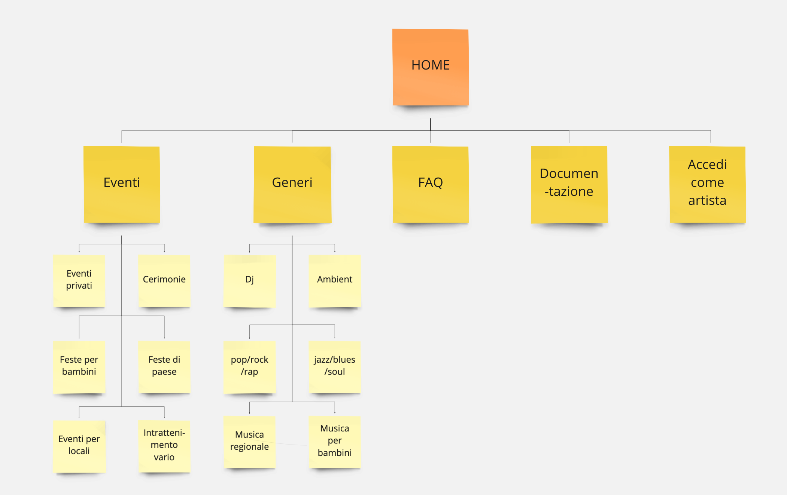

DOCUMENTAZIONE
Abstract
Abbiamo voluto creare questo sito web per le persone che come noi cercano artisti per un evento, dando anche la possibilità ai musicisti di aumentare la loro visibilità.
Il servizio offerto è rivolto ad un target di utenti molto ampio, in quanto c’è una vasta scelta di eventi e generi musicali.
Il punto di forza del sito, rispetto ad altri simili, sarebbe quello di offrire servizi gratuiti con un layout semplice e intuitivo.
Project Management Plan
Benchmarking
Gli obbiettivi del sito web sono due: da una parte offrire un servizio che rende disponibili artisti e musicisti di diverso genere per la partecipazione ad eventi di vario tipo, dall’altra permettere agli artisti stessi di rendersi visibili sulla piattaforma attraverso la funzione “Accedi” del sito.
Il target, sia per quanto riguarda gli artisti che gli utenti, è molto ampio: comprende una fascia indicativa che va dai 18 ai 65+ anni.
Nella fase precedente all’ideazione del sito abbiamo fatto una ricerca sui competitors ed è risultato che il sito più simile al servizio che offriamo è www.musiqua.it, mentre quello che si distanzia di più per quanto riguarda il target è musicusata.it.
Il tema e il target di musiqua.it sono simili al nostro con una selezione di elementi altrettanto simile: la barra del menù, le categorie, il bottone di accesso, ecc.
La palette di colori del sito comprende 2/3 tonalità di rosso bordeaux, beige, bianco e nero. Inoltre il sito presenta una sezione blog con vari articoli che propongono consigli per eventi.
Il sito musicusata.it propone sempre il tema della musica, ma con obbiettivi diversi: la vendita di strumenti musicali e offerte di lavoro da/per musicisti.
Il sito presenta un layout che ricorda una bacheca annunci.
Il target si differenzia da quello precedente perché si rivolge maggiormente ai professioni o agli appassionati di musica.
Struttura e Layout
Archittetura del sito

Wireframe
HOME
EVENTI/GENERI
ESEMPIO EVENTI PRIVATI
FAQ
LOGIN ARTISTA
VISUALE LOGIN ARTISTA
Look and Feel
FONTS e COLORI
Per quanto riguarda la scelta grafica abbiamo utilizzato Google Fonts per i fonts e Coolors.it per la palette colori.
Font 1: Roboto è stato utilizzato per i testi, per h5 e h6, per header e footer.
Font 2: Libre Baskerville è stato utilizzato per i titoli (h1, h2, h3 e h4).
Colore 1: blu scuro (#103783) è stato utilizzato per header, footer, background bottoni più importanti e alcune scritte.
Colore 2: azzurro chiaro (#b0d4ef) è stato utilizzato per il background del sito.
Colore 3: nero (black) è stato utilizzato per i testi.
Colore 4: bianco (white) è stato utilizzato per alcuni sfondi dei bottoni, per i testi del footer e per le voci del menù.
Colore 5: grigio scuro (#ced4da) è stato utilizzato per il background della presentazione artisti e per alcuni bottoni.
Colore 6: grigio (#E6E6E6) è stato utilizzato come background dei riquadri e bottone accedi.
Colore 7: giallo senape (#EAC435) è stato utilizzato come bordo dei riquadri.
EFFETTI PARTICOLARI
Effetto hover al passaggio del cursore per quanto riguarda la colorazione delle voci del menù e il riempimento delle voci dell’account attraverso il comando input.
IMMAGINI
Tutte le immagini presenti nel sito sono con licenza creative commons e sono state scaricate da pexels.com e unsplash.com.
LOGO
Il logo è stato creato a partire da zero su figma.com.
Linguaggi e Strumenti
I linguaggi utilizzati sono HTML e CSS. Gli strumenti che abbiamo utilizzato sono SublimeText2 come text editor, Google Fonts per i fonts, Font Awesome per le icone, Google Analytics per le visualizzazioni ed infine, per la pubblicazione del sito, abbiamo utilizzato Github.
Communication Strategy
Background
Dopo aver effettuato l’analisi dei competitors abbiamo deciso di inserire nel nostro sito dei miglioramenti:
- inserimento di un filtro con più opzioni per ottenere una ricerca più approfondita
- il blog è stato sostituito con una pagina Faq che riteniamo essere più utile all’utente
- abbiamo deciso di limitare il numero di hashtag da associare ad un artista per rendere la ricerca più mirata
- il servizio è completamente gratuito rispetto a musiqua.it che offre un pacchetto premium per i musicisti che si vogliono iscrivere sul sito.
I punti a sfavore del sito potrebbero essere la mancanza di competenze specifiche che non ci ha permesso di renderlo effettivamente funzionante e la poca visibilità del sito data la sua recente creazione.
Obiettivi comunicativi e Promozione
Abbiamo deciso di promuovere il sito tramite il social network Instagram e inviando il link tramite WhatsApp e via E-mail.
Target audiance e Messaggio
Il target a cui si rivolge il sito comprende persone dai 18 ai 65+ anni. Nello specifico si rivolge a coloro che organizzano un evento e necessitano di intrattenimento e a coloro che vogliono farsi conoscere come artisti.
Questi gruppi vengono raggiunti attraverso l’utilizzo dei motori di ricerca oppure attraverso i social media.
Un target secondario del sito sono coloro che non sono interessati ad utilizzare il servizio ma vengono a conoscenza del sito attraverso i social o da amici che l’hanno già utilizzato.
Il messaggio del sito è dare visibilità ad artisti conosciuti e aiutare gli utenti a migliorare i propri eventi.
Il servizio si propone di garantire una certa affidabilità di ingaggio degli artisti attraverso le recensioni e il materiale audiovisivo.
Le azioni che il target può fare nei confronti del nostro sito sono: lasciare una recensione sia al servizio stesso che agli artisti, taggare e condividere materiale sui social media affinché altre persone vengano a conoscenza del sito.
Valutazione dei risultati
Abbiamo deciso di valutare i risultati attraverso due strumenti: Google Analytics e Instagram.
Per quanto riguarda il primo ci siamo prefissati di ottenere 70 visite sul sito web da utenti unici.
Per quanto riguarda il secondo ci siamo prefissati 3 obbiettivi:
- 30 followers
- 30 likes
- 5 commenti al primo post